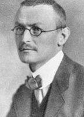

(1877 – 1962)

20. yüzyılın en önemli yazarlarından biri olan Hermann Hesse 2 Temmuz 1877'de Almanya'da doğdu. İlk şiirini yirmi beş yaşında yazmıştır. Kendini kanıtlama, kendi olma, yazarın kendini yansıtması, bireyin kendini aşması gibi temaları içeren "Bozkırkurdu", "Siddhartha", "Peter Camenzind", "Narziss ve Goldmund", "Çarklar Arasında" ve "Boncuk Oyunu" yazarın en tanınan romanları arasındadır.
Tam adı Hermann Karl Hesse olan yazar 2 Temmuz 1877'de Almanya'nın Württemberg kentinde dünyaya geldi. Babası Johannes Hesse 1847 Estonya doğumluydu, annesi Marie Gundert ise 1842'de dünyaya gelmişti. Aile 1880'de altı yıllığına İsviçre'nin Basel şehrine taşınıp sonrasında Calw'a döndü.
Göppingen'deki Latin Okulu'na kaydolan Hesse, 1891'de Evancelis Teoloji Semineri'ne katıldıktan bir yıl sonra isyankar yanı ağır bastığı için okuldan kaçtı. Farklı bir dönem geçiren, anne babasıyla pek çok konuda anlaşmazlığa düşen yazar, intihar girişiminde bulunduktan sonra Christoph Friedrich Blumhardt kontrolünde Bad Boll isimli enstitüye yatırıldı. Carl Jung'un öğrencisi Lang'ın tedavi ettiği Hesse'nin ruhbilime ve Jung'a duyduğu ilgi, sonrasında körüklenerek iç dünyasının zenginleşmesine neden olacaktı. 1892'nin sonunda eğitimine devam etmek üzere Cannstatt'taki bir liseye başvurdu. Eğitim sistemindeki kısıtlamalar ve misyoner babasının dinsel baskıları Hesse'yi çok rahatsız ediyordu. Bu yüzden kendi yolunu bulmak için uzun süre mücadele etmek zorunda kalan yazar, bir kitapçıda çalışmaya başladı. Sadece üç gün süren kitapçılık işinden sonra 1894 yazında, on dört ay çalışacağı bir fabrikada iş buldu. Lehim yapan Hesse işin mekanik yapısı nedeniyle bunalıyor, ruhunda çıkış noktaları arıyordu. Ekim 1895'te tekrar eski işine geri döndü ve "Heckenhauer" isimli kitapçıda çalışmaya başladı. Burada dilbilim, teoloji ve hukuk üzerine okumaya başladı. On iki saatlik günlük çalışma temposu onu yıldırmıyor, işten sonra evde de çalışıyor, boş olan pazar günlerini arkadaşlarından çok kitaplarla geçirmeyi tercih ediyordu. Goethe, Lessing, Schiller gibi önemli yazarlarla ilgileniyor ve Yunan mitolojisi üzerinde çalışıyordu. 1896'da bir dergide Madonna isimli şiiri yayımlanmıştı.
1898'de kendi ayakları üzerinde durmaya başlayan ve ailesinden maddi yardım almak zorunda kalmayan Hesse, Alman romantikleri Clemens Brentano, Joseph Freiherr von Eichendorff, Friedrich Hölderlin ve Novalis'ten ilham alıyordu. Aynı yıl şiirlerini bir araya getirdiği Romantik Şarkılar isimli kitabını yayımlayan yazar, 1899'da da Gece Yarısından Bir Saat Sonra'yı çıkardı. İki kitap da ilgi görmemişti. Ancak Leipzigli yayıncı Eugen Diederichs edebiyat dünyasının bu genç yazarı için oldukça olumlu şeyler düşünüyordu.
1899'un sonbaharında işini değiştiren ve Basel'de antika kitaplar satan bir kitabevinde çalışmaya başlayan Hesse entelektüel bir ailenin yanında kiracı olarak kalıyordu. Tanıştığı insanlar onun kendini geliştirmesine vesile oldu. Gözlerindeki rahatsızlık yüzünden askerlik görevinden muaf tutulan Hesse'nin bitmek bilmeyen ve hayatı boyunca da yakasını bırakmayacak olan baş ağrıları o dönem başladı. 1901'de, görmeyi çok istediği İtalya'ya giden Hesse'nin şiirleri ve yazıları gazetelerde yayımlanıyor ve büyük ilgi görüyordu. Sonunda yayıncı Samuel Fischer'ın yazarın Peter Camenzind adlı kitabını okuması, Hesse'nin yazarlık kariyeri için dönüm noktası oldu. Zira artık sadece kitap yazmaya odaklanabilecek ve özgür bir yazar olacaktı.
1904'te Maria Bernoulli'yle evlenen ve eşiyle birlikte Constance gölü yakınındaki Gaienhofen'da yaşamaya başlayan Hesse'nin ikinci romanı Çarklar Arasında, 1906'da kitap raflarındaki yerini aldı. Onu 1910'daki Gertrude takip etti. Bu kitap beklenen ilgiyi görmedi ve Hesse, yazıyla başının dertte olduğunu açıklayıp bunu başarısızlık olarak nitelendirdi.
Yazar Budizm'le yakından ilgileniyordu. O dönem Arthur Schopenhauer'la birlikte, yapıtları en çok ilgi çeken yazarlardan biriydi ve "teozofi"yi keşfetti. Hindistan'a olan ilgisi Schopenhauer'un eserleriyle daha da canlanan Hesse, bu dönemde eşiyle uyumsuzluk yaşadığı için bir süreliğine yalnız başına Sri Lanka ve Endonezya'ya gitti. İki ülkenin yazar üzerindeki ruhsal ve dini etkileri, eserlerine de yansıyacaktı. Hesse çifti yazarın uzun gezisi bittikten sonra 1912'de Bern'e taşındı, ancak evliliklerindeki sorunlar çözülmemişti. Yazar bu durumu, 1914'te yayımlayacağı Rosshalde isimli romanında anlatacaktı.
I. Dünya Savaşı başladığında Alman Hükümeti'ne savaşmak için gönüllü olduğunu bildiren Hesse, sağlık sorunları nedeniyle savaşa katılmadı; ancak savaş tutsaklarının bakımı için hizmet vermeye başladı. Hesse'nin 3 Kasım 1914'te Neuen Züricher Zeitung gazetesinde "Ey Arkadaşlar, Böyle Olmaz!" başlıklı yazısı yayımlandıktan sonra, arkadaşları ve Alman basını ona saldırmaya başladı. Sadece Theodor Heuss ve Fransız yazar Romain Rolland Hesse'yi desteklemişlerdi.
1916 yılı, ünlü yazar için çok daha zor bir yıl oldu. Babasının kaybı, oğlunun hastalığı ve eşinde ortaya çıkan şizofreni Hesse'yi çok zorladı. Psikoterapi görmeye başlayan yazar, yeni romanı Demian'ı 1919'da ateşkes ilan edilmesinden hemen sonra "Emil Sinclair" takma adı altında yayımladı.
Aynı yıl, eşinin hastalığı daha da kötüleştiği ve araları da onarılmayacak biçimde açıldığı için çift boşandı. Hesse tek başına Minusio bei Locarno yakınlarındaki Ticino'da küçük bir çiftlik evine yerleşti. Yazma faaliyetlerinin dışında resim de yapmaya başlayan Hesse, 1920'de Klingsor'un Son Yazı romanını yayımladıktan sonra Hint ve Budizm felsefesine duyduğu sevgiyi anlatan Siddhartha (1922) romanı da yayımlandı.
1924'te, İsviçreli yazar Lisa Wenger'ın şarkıcı kızı Ruth Wenger'le evlendi. Kurgast (1925), Nuremberg Yolculuğu (1927) ve Bozkırkurdu (1927) romanlarından sonra Hesse'nin biyografisi şair arkadaşı Hugo Ball tarafından yazıldı. Wenger'dan ayrıldıktan sonra Ninon Dolbin Ausländer isimli Yahudi bir kadınla evlenen Hesse Nazi oluşumunun karşısında olduğu için yazıları Alman basını tarafından protesto edildi. 1931'de Narziss ve Goldmund adlı romanını yayımlayan yazar, 1932'de Boncuk Oyunu'nu çıkardı.
1933'te Nazi karşıtı düşüncelerinden dolayı sürgüne gönderilen Hesse'yi Bertolt Brecht ve Thomas Mann yalnız bırakmadılar. Savaşa karşı olan tutumu ve hümanist tavrı nedeniyle Almanlar tarafından hep dışlanan Hesse, Boncuk Oyunu isimli romanıyla 1946'da Nobel Edebiyat Ödülü'nün sahibi oldu.
Hermann Hesse, 9 Ağustos 1962'de İsviçre'de öldüğünde, biyografisini yazan arkadaşı Hugo Ball'un da gömüldüğü Montagnola'daki San Abbondio Mezarlığı'nda toprağa verildi.
Seçme Yapıtları: Hermann Lauscher (1900), Peter Camenzind (1904), Çarklar Arasında (1906), Gertrud (1910), Rosshalde (1912 – 1913), Knulp (1915), Gençlik Güzel Şey (1916), Demian (1919), Siddhartha (1922 – Can Yayınları, 2009), Bozkırkurdu (1927), Narziss ve Goldmund (1930 – Yapı Kredi Yayınları, 2012), Doğu Yolculuğu (1932), Boncuk Oyunu (1943 – Yapı Kredi Yayınları, 2010)